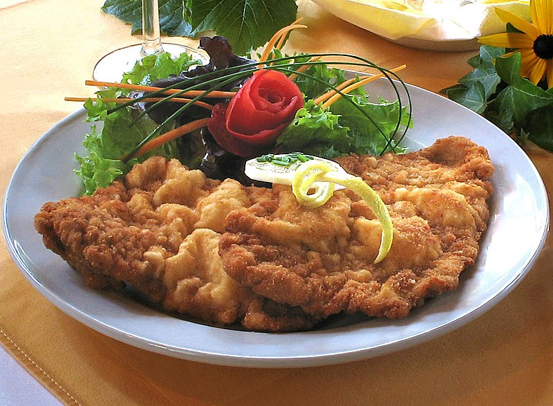

<ion-header>
  <ion-toolbar color="primary">
    <ion-buttons slot="start">
      <ion-back-button></ion-back-button>
    </ion-buttons>
    <ion-title>Schnitzel</ion-title>
    <ion-buttons slot="primary">
      <ion-button>
        <ion-icon name="trash"></ion-icon>
      </ion-button>
    </ion-buttons>
  </ion-toolbar>
</ion-header>
<ion-content>
  
  <h1>Schnitzel</h1>
  <ion-grid>
    <ion-item>
      <ion-label>French Fries </ion-label>
    </ion-item>
    <ion-item>
      <ion-label>Pork Meat</ion-label>
    </ion-item>
    <ion-item>
      <ion-label>Salad</ion-label>
    </ion-item>
  </ion-grid>
</ion-content>
